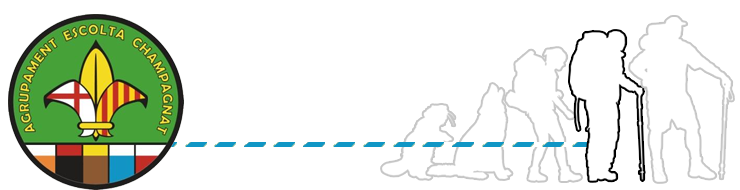

Pioners i Caravel·les
Objectius
Escoltisme
- Conèixer la metodologia escolta i el pionerisme.
- Participar activament en l’empresa.
- Ser constant en l’assistència i en la implicació al CAU.
Natura
- Adquirir uns coneixements bàsics de la natura que ens envolta.
- Deixar net i reverir l’entorn per on hem passat, passem i passarem.
- Aprendre les tècniques de muntanya.
Fe
- Fomentar l’assistència a la Pessebrada.
- Aprofitar moments de reflexió, tan individuals com en grup.
- Conèixer i representar els diferents valors de respecte vers els altres.
Unitat
- Integrar la unitat i fer pinya.
- Ser un exemple tant pels pioners com per les branques més petites.
- Cooperar per garantir el bon funcionament de l’activitat pionera.